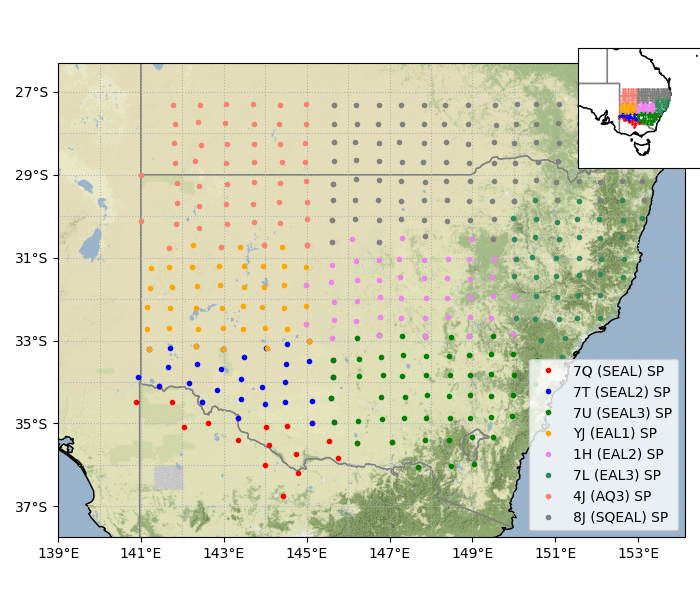

Eastern Australia Linkage (EAL) arrays
How to cite the data ?
SEAL Reference: Rawlinson, N., Kennett, B. L., & Heintz, M. (2006). Insights into the structure of the upper mantle beneath the Murray Basin from 3D teleseismic tomography. Australian Journal of Earth Sciences, 53(4), 595-604.
Doi:
10.1080/08120090600686751
SEAL2 Reference: Rawlinson, N. (2007). SEAL2 [Data set]. Australian Passive Seismic Server - Australian National University.
Doi:
10.7914/SN/7T_2007
SEAL3 Reference: Rawlinson, N. (2007). SEAL3 [Data set]. Australian Passive Seismic Server - Australian National University.
Doi:
TBA
EAL1 Reference:
TBA / AusPass Doi:
TBA
EAL2 Reference:
TBA / AusPass Doi:
TBA
EAL3 Reference:
TBA / AusPass Doi:
TBA
SQEAL Reference: Rawlinson, N., & Yingjie Yang. (2012). South Queensland Eastern Australia Linkage - ARC Discovery Grant DP120103673 [Data set]. Australian Passive Seismic Server.
Doi:
10.7914/SN/8J_2012
AQ3 Reference: AusPass. (2014). AQ3 SW Queensland and NW New South Wales. The Australian National University.
Doi:
10.7914/SN/4J_2014

The Eastern Australia Linkeage arrays (EAL1/2/3,SEAL1/2/3,SQEAL,AQ3,etc) are each part of the WOMBAT rolling array from Queensland to Victoria, generally consisting of short-period sensors spaced ~50 km apart.
Funding sources: AuScope,ARC,and more
Access data
Read more about EAL networks:
- Rawlinson, N., Kennett, B. L., & Heintz, M. (2006). Insights into the structure of the upper mantle beneath the Murray Basin from 3D teleseismic tomography. Australian Journal of Earth Sciences, 53(4), 595-604.Doi: 10.1080/08120090600686751 >
- Citation 2 TBA Doi: TBA